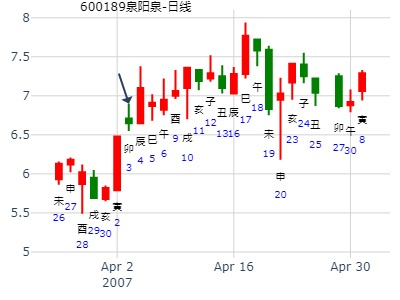
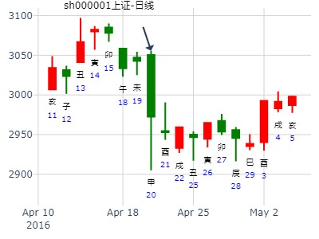

主帖标题: 底：丁琦测上证丁酉年上半年何月是底？
求测人：某人，男，庚申(1980年)，自动起卦(起卦方式)
占问事宜：底：测上证丁酉年上半年何月是底？
公历：2017年1月29日9时10分，星期日。
干支：丙申年 辛丑月 丙辰日 癸巳时[size=14.6667px] (卦身：未)
主变卦 泽地萃(兑宫) 之 泽水困(兑宫) [空亡:子、丑]
青龙 ▅▅ ▅▅ 父母丁未土 ▅▅ ▅▅ 父母丁未土
玄武 ▅▅▅▅▅ 兄弟丁酉金 应 ▅▅▅▅▅ 兄弟丁酉金
白虎 ▅▅▅▅▅ 子孙丁亥水 ▅▅▅▅▅ 子孙丁亥水 应
螣蛇 ▅▅ ▅▅ 妻财乙卯木 ▅▅ ▅▅ 官鬼戊午火
勾陈 ▅▅ ▅▅×官鬼乙巳火 世 ▅▅▅▅▅ 父母戊辰土
朱雀 ▅▅ ▅▅ 父母乙未土 ▅▅ ▅▅ 妻财戊寅木 世
主帖标题: 强势调整，短线机会...
002686亿利达明天涨跌 手摇卦
公历时间：2020年1月9日18时59分
干 支：己亥年 丁丑月 辛亥日 丁酉时
旬 空：辰巳 申酉 寅卯 辰巳
神 煞：驿马─巳 桃花─子 日禄─酉 贵人─寅，午
兑宫：泽地萃 兑宫：泽水困（六合）
六神 【本 卦】 【变 卦】
螣蛇 ▄▄ ▄▄ 父母丁未土 ▄▄ ▄▄ 父母丁未土
勾陈 ▄▄▄▄▄ 兄弟丁酉金 应 ▄▄▄▄▄ 兄弟丁酉金
朱雀 ▄▄▄▄▄ 子孙丁亥水 ▄▄▄▄▄ 子孙丁亥水 应
青龙 ▄▄ ▄▄ 妻财乙卯木 ▄▄ ▄▄ 官鬼戊午火
玄武 ▄▄ ▄▄ 官鬼乙巳火 世× ▄▄▄▄▄ 父母戊辰土
白虎 ▄▄ ▄▄ 父母乙未土 ▄▄ ▄▄ 妻财戊寅木 世
求测内容：医药主题指数000121--3月份总体走势？
公历：2020年02月28日09时15分
四柱：庚子年 戊寅月 辛丑日 癸巳时 (日空：辰巳)
卦名：兑宫2世卦：泽地萃 之 兑宫1世六合卦：泽水困
卦身：主卦巳爻持世，卦身在六爻；阴爻持世，月卦身在未
螣蛇 ▅ ▅ 父母丁未土 ▅ ▅ 父母丁未土
勾陈 ▅▅▅ 兄弟丁酉金 应 ▅▅▅ 兄弟丁酉金
朱雀 ▅▅▅ 子孙丁亥水 ▅▅▅ 子孙丁亥水 应
青龙 ▅ ▅ 妻财乙卯木 ▅ ▅ 官鬼戊午火
玄武 ▅ ▅ 官鬼乙巳火 世×→ ▅▅▅ 父母戊辰土
白虎 ▅ ▅ 父母乙未土 ▅ ▅ 妻财戊寅木 世
辰巳旬空，财卯临月建。兄弟酉金卯月月破无用。总体看涨。
官鬼巳火出空后，下半个月看跌。所以看冲高回落走势。
马后炮：世鬼空，冲空之日则开跌。
乙己年买卖药石科技得财如何？金手工卦
时间: 2025-02-16 13时23分
干支: 乙巳年戊寅月丙辰日 (旬空: 子丑 )
泽地萃 泽水困
六神 伏神 本 卦 变 卦
青龙 ▅▅ ▅▅ 父母未土 ▅▅ ▅▅ 父母未土
玄武 ▅▅▅▅▅ 兄弟酉金 应 ▅▅▅▅▅ 兄弟酉金
白虎 ▅▅▅▅▅ 子孙亥水 ▅▅▅▅▅ 子孙亥水 应
腾蛇 ▅▅ ▅▅ 妻财卯木 ▅▅ ▅▅ 官鬼午火
勾陈 ▅▅ ▅▅ 官鬼巳火 世Ｘ→ ▅▅▅▅▅ 父母辰土
朱雀 ▅▅ ▅▅ 父母未土 ▅▅ ▅▅ 妻财寅木 世
主帖标题: [原创]2007年3月30日上海大盘走势预测
公历时间：2007年3月30日9时30分 星期五农历时间：丁亥年二月十二巳时
干支：丁亥年 癸卯月 癸亥日 丁巳时 (旬空：子丑)
神煞：驿马—巳 桃花—子 日禄—子 贵人—卯，巳
兑宫：泽地萃 兑宫：泽水困（六合）
六神 【本 卦】 【变 卦】
白虎 ▅▅ ▅▅ 父母丁未土 ▅▅ ▅▅ 父母丁未土
螣蛇 ▅▅▅▅▅ 兄弟丁酉金 应 ▅▅▅▅▅ 兄弟丁酉金
勾陈 ▅▅▅▅▅ 子孙丁亥水 ▅▅▅▅▅ 子孙丁亥水 应
朱雀 ▅▅ ▅▅ 妻财乙卯木 ▅▅ ▅▅ 官鬼戊午火
青龙 ▅▅ ▅▅ 官鬼乙巳火 世×→ ▅▅▅▅▅ 父母戊辰土
玄武 ▅▅ ▅▅ 父母乙未土 ▅▅ ▅▅ 妻财戊寅木 世
主帖标题: 浅谈3.1日大盘走势
2011年 2月 28日 15时 0分 (起卦方式：手动指定)
干支：辛卯年 庚寅月 甲寅日 壬申时 日空亡：子丑
神煞：驿马－申 桃花－卯 日禄－寅 贵人－丑，未
兑宫：泽地萃 兑宫：泽水困 (六合)
六神 伏神 本 卦 变 卦
玄武 父母未土 ▅▅ ▅▅ 父母未土 ▅▅ ▅▅
白虎 兄弟酉金 ▅▅▅▅▅ 应 兄弟酉金 ▅▅▅▅▅
螣蛇 子孙亥水 ▅▅▅▅▅ 子孙亥水 ▅▅▅▅▅ 应
勾陈 妻财卯木 ▅▅ ▅▅ 官鬼午火 ▅▅ ▅▅
朱雀 官鬼巳火 ▅▅ ▅▅ 世 ╳→ 父母辰土 ▅▅▅▅▅
青龙 父母未土 ▅▅ ▅▅ 妻财寅木 ▅▅ ▅▅ 世
主帖标题: 002494明天什么时候抛合适？
求测人：某人，男，戊辰(1988年)，自动起卦(起卦方式)
占问事宜：002494明天什么时候抛合适
公历：2016年3月9日17时5分，星期三。
干支：丙申年 辛卯月 庚寅日 乙酉时 (卦身：未)
主变卦 泽地萃(兑宫) 之 泽水困(兑宫) [空亡:午、未]
螣蛇 ▅▅ ▅▅ 父母丁未土 ▅▅ ▅▅ 父母丁未土
勾陈 ▅▅▅▅▅ 兄弟丁酉金 应 ▅▅▅▅▅ 兄弟丁酉金
朱雀 ▅▅▅▅▅ 子孙丁亥水 ▅▅▅▅▅ 子孙丁亥水 应
青龙 ▅▅ ▅▅ 妻财乙卯木 ▅▅ ▅▅ 官鬼戊午火
玄武 ▅▅ ▅▅×官鬼乙巳火 世 ▅▅▅▅▅ 父母戊辰土
白虎 ▅▅ ▅▅ 父母乙未土 ▅▅ ▅▅ 妻财戊寅木 世
今天买了002494，盈利3点多。明天一开盘跑路还是等一等再跑。
600189吉林森工600189的走势如何？什么时候卖出较好？
起卦方式：手动摇卦 公历时间：2007年4月3日18时15分 星期二
农历时间：丁亥年二月十六酉时
干支：丁亥年 癸卯月 丁卯日 己酉时 (旬空：戌亥)
神煞：驿马—巳 桃花—子 日禄—午 贵人—酉，亥
兑宫：泽地萃 兑宫：泽水困（六合）
六神 【本 卦】 【变 卦】
青龙 ▅▅ ▅▅ 父母丁未土 ▅▅ ▅▅ 父母丁未土
玄武 ▅▅▅▅▅ 兄弟丁酉金 应 ▅▅▅▅▅ 兄弟丁酉金
白虎 ▅▅▅▅▅ 子孙丁亥水 ▅▅▅▅▅ 子孙丁亥水 应
螣蛇 ▅▅ ▅▅ 妻财乙卯木 ▅▅ ▅▅ 官鬼戊午火
勾陈 ▅▅ ▅▅ 官鬼乙巳火 世×→ ▅▅▅▅▅ 父母戊辰土
朱雀 ▅▅ ▅▅ 父母乙未土 ▅▅ ▅▅ 妻财戊寅木 世

主帖标题: 癸巳年第二轮实战卦：何日买进002150可获利
占问事宜：何日买进002150可获利
公历：2013年4月2日20时59分，星期二。
时间: 2013-04-02
干支: 癸巳年乙卯月戊戌日壬戌时 (旬空: 辰巳 )
泽地萃 泽水困
朱雀 ▅▅ ▅▅ 父母未土 ▅▅ ▅▅ 父母未土
青龙 ▅▅▅▅▅ 兄弟酉金 应 ▅▅▅▅▅ 兄弟酉金
玄武 ▅▅▅▅▅ 子孙亥水 ▅▅▅▅▅ 子孙亥水 应
白虎 ▅▅ ▅▅ 妻财卯木 ▅▅ ▅▅ 官鬼午火
腾蛇 ▅▅ ▅▅ 官鬼巳火 世Ｘ→ ▅▅▅▅▅ 父母辰土
勾陈 ▅▅ ▅▅ 父母未土 ▅▅ ▅▅ 妻财寅木 世
主帖标题: 2016丙申年上证指数每天预测实战探索（每天在回复中更新）
公历：2016年4月20日9时30分，星期三。
干支：丙申年 壬辰月 壬申日 乙巳时 (卦身：未)
主变卦 泽地萃(兑宫) 之 泽水困(兑宫) [空亡:戌、亥]
白虎 ▅▅ ▅▅ 父母丁未土 ▅▅ ▅▅ 父母丁未土
螣蛇 ▅▅▅▅▅ 兄弟丁酉金 应 ▅▅▅▅▅ 兄弟丁酉金
勾陈 ▅▅▅▅▅ 子孙丁亥水 ▅▅▅▅▅ 子孙丁亥水 应
朱雀 ▅▅ ▅▅ 妻财乙卯木 ▅▅ ▅▅ 官鬼戊午火
青龙 ▅▅ ▅▅×官鬼乙巳火 世 ▅▅▅▅▅ 父母戊辰土
玄武 ▅▅ ▅▅ 父母乙未土 ▅▅ ▅▅ 妻财戊寅木 世

主帖标题: 4月20日大盘
公历起卦时间：2022年4月20日9时11分 (按农历时间起卦)
农历：壬寅年三月二十日巳时
干支：壬寅年 甲辰月 癸卯日 丁巳时 （日空：辰巳）
兑宫：泽地萃 兑宫：泽水困 (六合)
六神 伏神 本 卦 变 卦
白虎 父母丁未土 ▅▅ ▅▅ 父母丁未土 ▅▅ ▅▅
螣蛇 兄弟丁酉金 ▅▅▅▅▅ 应 兄弟丁酉金 ▅▅▅▅▅
勾陈 子孙丁亥水 ▅▅▅▅▅ 子孙丁亥水 ▅▅▅▅▅ 应
朱雀 妻财乙卯木 ▅▅ ▅▅ 官鬼戊午火 ▅▅ ▅▅
青龙 官鬼乙巳火 ▅▅ ▅▅ 世 ╳→ 父母戊辰土 ▅▅▅▅▅
玄武 父母乙未土 ▅▅ ▅▅ 妻财戊寅木 ▅▅ ▅▅ 世
马后炮：兄弟暗动。值财反而跌。
萃之困。官化父。大跌。600671
公历：2001年6月23日14时32分 星期六 北京时间
干支：辛巳年 甲午月 丁巳日 丁未时 旬空：申酉 辰巳 子丑 寅卯
兑：泽地萃 兑：泽水困(六合)
【本 卦】 【变 卦】
▅▅ ▅▅ 父母未土 ▅▅ ▅▅ 父母未土
▅▅▅▅▅ 兄弟酉金 应 ▅▅▅▅▅ 兄弟酉金
▅▅▅▅▅ 子孙亥水 ▅▅▅▅▅ 子孙亥水 应
▅▅ ▅▅ 妻财卯木 ▅▅ ▅▅ 官鬼午火
▅▅ ▅▅ 官鬼巳火 世×→ ▅▅▅▅▅ 父母辰土
▅▅ ▅▅ 父母未土 ▅▅ ▅▅ 妻财寅木 世
分析：
1。股价卯木弱，且分析式中官旺动而化消息，股价将大跌。
2。亥寅木为高点。辰日大跌。消息值日故。
3。困者。困也。
王注：
1。亥日与申日K线相反。一动合一动冲。
2。辰日大跌。应在父母辰。
◇六二:引，吉、无咎。孚乃利用瀹。
象曰：引吉无咎，中未变也。
起卦方式：时间起卦 www.iqing.net 线上排盘系统公历时间：2006年6月5日9时45分 星期一农历时间：丙戌年五月初十巳时干支：丙戌年 癸巳月 乙丑日 辛巳时 (旬空：戌亥)神煞：驿马—亥 桃花—午 日禄—卯 贵人—子，申 兑宫：泽地萃 兑宫：泽水困（六合）六神 【本 卦】 【变 卦】玄武 ▅▅ ▅▅ 父母丁未土 ▅▅ ▅▅ 父母丁未土 白虎 ▅▅▅▅▅ 兄弟丁酉金 应 ▅▅▅▅▅ 兄弟丁酉金 螣蛇 ▅▅▅▅▅ 子孙丁亥水 ▅▅▅▅▅ 子孙丁亥水 应勾陈 ▅▅ ▅▅ 妻财乙卯木 ▅▅ ▅▅ 官鬼戊午火 朱雀 ▅▅ ▅▅ 官鬼乙巳火 世×→ ▅▅▅▅▅ 父母戊辰土 青龙 ▅▅ ▅▅ 父母乙未土 ▅▅ ▅▅ 妻财戊寅木 世出生年：年 性别：男 占事：
起卦方式：时间起卦 www.iqing.net 线上排盘系统公历时间：2006年6月5日11时45分 星期一农历时间：丙戌年五月初十午时干支：丙戌年 癸巳月 乙丑日 壬午时 (旬空：戌亥)神煞：驿马—亥 桃花—午 日禄—卯 贵人—子，申 坤宫：泽天夬 兑宫：兑为泽（六冲）六神 伏 神 【本 卦】 【变 卦】玄武 ▅▅ ▅▅ 兄弟丁未土 ▅▅ ▅▅ 兄弟丁未土 世白虎 ▅▅▅▅▅ 子孙丁酉金 世 ▅▅▅▅▅ 子孙丁酉金 螣蛇 ▅▅▅▅▅ 妻财丁亥水 ▅▅▅▅▅ 妻财丁亥水 勾陈 ▅▅▅▅▅ 兄弟甲辰土 ○→ ▅▅ ▅▅ 兄弟丁丑土 应朱雀 父母乙巳火 ▅▅▅▅▅ 官鬼甲寅木 应 ▅▅▅▅▅ 官鬼丁卯木 青龙 ▅▅▅▅▅ 妻财甲子水 ▅▅▅▅▅ 父母丁巳火 出生年：年 性别：男 占事：
起卦方式：时间起卦 www.iqing.net 线上排盘系统公历时间：2006年6月5日14时45分 星期一农历时间：丙戌年五月初十未时干支：丙戌年 癸巳月 乙丑日 癸未时 (旬空：戌亥)神煞：驿马—亥 桃花—午 日禄—卯 贵人—子，申 兑宫：兑为泽（六冲） 坎宫：水泽节（六合）六神 【本 卦】 【变 卦】玄武 ▅▅ ▅▅ 父母丁未土 世 ▅▅ ▅▅ 子孙戊子水 白虎 ▅▅▅▅▅ 兄弟丁酉金 ▅▅▅▅▅ 父母戊戌土 螣蛇 ▅▅▅▅▅ 子孙丁亥水 ○→ ▅▅ ▅▅ 兄弟戊申金 应勾陈 ▅▅ ▅▅ 父母丁丑土 应 ▅▅ ▅▅ 父母丁丑土 朱雀 ▅▅▅▅▅ 妻财丁卯木 ▅▅▅▅▅ 妻财丁卯木 青龙 ▅▅▅▅▅ 官鬼丁巳火 ▅▅▅▅▅ 官鬼丁巳火 世出生年：年 性别：男 占事：
起卦方式：时间起卦 www.iqing.net 线上排盘系统公历时间：2006年6月5日15时49分 星期一农历时间：丙戌年五月初十申时干支：丙戌年 癸巳月 乙丑日 甲申时 (旬空：戌亥)神煞：驿马—亥 桃花—午 日禄—卯 贵人—子，申 坎宫：泽火革 坎宫：雷火丰六神 伏 神 【本 卦】 【变 卦】玄武 ▅▅ ▅▅ 官鬼丁未土 ▅▅ ▅▅ 官鬼庚戌土 白虎 ▅▅▅▅▅ 父母丁酉金 ○→ ▅▅ ▅▅ 父母庚申金 世螣蛇 ▅▅▅▅▅ 兄弟丁亥水 世 ▅▅▅▅▅ 妻财庚午火 勾陈 妻财戊午火 ▅▅▅▅▅ 兄弟己亥水 ▅▅▅▅▅ 兄弟己亥水 朱雀 ▅▅ ▅▅ 官鬼己丑土 ▅▅ ▅▅ 官鬼己丑土 应青龙 ▅▅▅▅▅ 子孙己卯木 应 ▅▅▅▅▅ 子孙己卯木
主帖标题: 测华丽家族业绩的实与虚
请各路大侠高手路过走过帮看看，谢谢！
如题：
求测人：某人，男，庚申(1980年)，自动起卦(起卦方式)
占问事宜：华的实与虚
公历：2015年6月7日11时0分，星期日。
干支：乙未年 壬午月 甲寅日 庚午时 (卦身：未)
主变卦 泽地萃(兑宫) 之 泽水困(兑宫) [空亡:子、丑]
玄武 ▅▅ ▅▅ 父母丁未土 ▅▅ ▅▅ 父母丁未土
白虎 ▅▅▅▅▅ 兄弟丁酉金 应 ▅▅▅▅▅ 兄弟丁酉金
螣蛇 ▅▅▅▅▅ 子孙丁亥水 ▅▅▅▅▅ 子孙丁亥水 应
勾陈 ▅▅ ▅▅ 妻财乙卯木 ▅▅ ▅▅ 官鬼戊午火
朱雀 ▅▅ ▅▅×官鬼乙巳火 世 ▅▅▅▅▅ 父母戊辰土
青龙 ▅▅ ▅▅ 父母乙未土 ▅▅ ▅▅ 妻财戊寅木 世
预测下周6月24日至28日国内股市走势如何
2019年6月21日14时38分 紫微天机星
干支：己亥年 庚午月 己丑日 辛未时 （日空：午未）
兑宫：泽地萃 兑宫：泽水困 (六合)
六神 伏神 本 卦 变 卦
勾陈 父母丁未土 ▅▅ ▅▅ 父母丁未土 ▅▅ ▅▅
朱雀 兄弟丁酉金 ▅▅▅▅▅ 应 兄弟丁酉金 ▅▅▅▅▅
青龙 子孙丁亥水 ▅▅▅▅▅ 子孙丁亥水 ▅▅▅▅▅ 应
玄武 妻财乙卯木 ▅▅ ▅▅ 官鬼戊午火 ▅▅ ▅▅
白虎 官鬼乙巳火 ▅▅ ▅▅ 世 ╳→ 父母戊辰土 ▅▅▅▅▅
腾蛇 父母乙未土 ▅▅ ▅▅ 妻财戊寅木 ▅▅ ▅▅ 世
巳日制裁三个银行消息，大盘跌
亥日冲飞巳火，又是卯木长生之地，大涨。
主帖标题: 上证6.29收盘走势？辰
上证6.29收盘走势wxxs
求测人：某人，男，庚午(1990年)，自动起卦(起卦方式)
占问事宜：要问的事情
公历：2022年6月29日6时12分，星期三。
干支：壬寅年 丙午月 癸丑日 乙卯时 (卦身：未)
主变卦 泽地萃(兑宫) 之 泽水困(兑宫) [空亡:寅、卯]
白虎 ▅▅ ▅▅ 父母丁未土 ▅▅ ▅▅ 父母丁未土
螣蛇 ▅▅▅▅▅ 兄弟丁酉金 应 ▅▅▅▅▅ 兄弟丁酉金
勾陈 ▅▅▅▅▅ 子孙丁亥水 ▅▅▅▅▅ 子孙丁亥水 应
朱雀 ▅▅ ▅▅ 妻财乙卯木 ▅▅ ▅▅ 官鬼戊午火
青龙 ▅▅ ▅▅×官鬼乙巳火 世 ▅▅▅▅▅ 父母戊辰土
玄武 ▅▅ ▅▅ 父母乙未土 ▅▅ ▅▅ 妻财戊寅木 世

主帖标题: 2016年7月14日星期四上证指数预测
公历：2016年7月14日9时30分，星期四。
干支：丙申年 乙未月 丁酉日 乙巳时 (卦身：未)
主变卦 泽地萃(兑宫) 之 泽水困(兑宫) [空亡:辰、巳]
青龙 ▅▅ ▅▅ 父母丁未土 ▅▅ ▅▅ 父母丁未土
玄武 ▅▅▅▅▅ 兄弟丁酉金 应 ▅▅▅▅▅ 兄弟丁酉金
白虎 ▅▅▅▅▅ 子孙丁亥水 ▅▅▅▅▅ 子孙丁亥水 应
螣蛇 ▅▅ ▅▅ 妻财乙卯木 ▅▅ ▅▅ 官鬼戊午火
勾陈 ▅▅ ▅▅×官鬼乙巳火 世 ▅▅▅▅▅ 父母戊辰土
朱雀 ▅▅ ▅▅ 父母乙未土 ▅▅ ▅▅ 妻财戊寅木 世
王阳明子，如果您要查看本帖隐藏内容请回复
主帖标题: 参透太极两仪，明股价兴替——天能重工
公历起卦时间：2021年7月27日10时46分 (按农历时间起卦)
干支：辛丑年 乙未月 丙子日 癸巳时 （日空：申酉）
兑宫：泽地萃 兑宫：泽水困 (六合)
青龙 父母丁未土 ▅▅ ▅▅ 父母丁未土 ▅▅ ▅▅
玄武 兄弟丁酉金 ▅▅▅▅▅ 应 兄弟丁酉金 ▅▅▅▅▅
白虎 子孙丁亥水 ▅▅▅▅▅ 子孙丁亥水 ▅▅▅▅▅ 应
螣蛇 妻财乙卯木 ▅▅ ▅▅ 官鬼戊午火 ▅▅ ▅▅
勾陈 官鬼乙巳火 ▅▅ ▅▅ 世 ╳→ 父母戊辰土 ▅▅▅▅▅
朱雀 父母乙未土 ▅▅ ▅▅ 妻财戊寅木 ▅▅ ▅▅ 世
六二：引吉，无咎，孚乃利用□①。象曰：引吉无咎，中未变也。□① ＝ 礻 ＋ 龠
六爻：官动化父。
综合：财入乙未墓，官动当涨，起于二爻，申酉出空股价遇阻，萃象成时困卦现。故癸未日后不利。此两仪本性。
主帖标题: 2016年8月12日星期五上证指数预测
公历：2016年8月12日9时30分，星期五。
干支：丙申年 丙申月 丙寅日 癸巳时 [空亡:戌、亥]
主变卦 泽地萃(兑宫) 之 泽水困(兑宫)
青龙 ▅▅ ▅▅ 父母丁未土 ▅▅ ▅▅ 父母丁未土
玄武 ▅▅▅▅▅ 兄弟丁酉金 应 ▅▅▅▅▅ 兄弟丁酉金
白虎 ▅▅▅▅▅ 子孙丁亥水 ▅▅▅▅▅ 子孙丁亥水 应
螣蛇 ▅▅ ▅▅ 妻财乙卯木 ▅▅ ▅▅ 官鬼戊午火
勾陈 ▅▅ ▅▅×官鬼乙巳火 世 ▅▅▅▅▅ 父母戊辰土
朱雀 ▅▅ ▅▅ 父母乙未土 ▅▅ ▅▅ 妻财戊寅木 世
王阳明子，如果您要查看本帖隐藏内容请回复
主帖标题: 9月上证大盘
出生：2020 年 性别：男 占事：没填
排卦：元亨利贞网六爻在线排盘系统 https://www.china95.net
公历起卦时间：2020年8月31日18时54分 (在线摇卦)
干支：庚子年 甲申月 丙午日 丁酉时 （日空：寅卯）
兑宫：泽地萃 兑宫：泽水困 (六合)
青龙 父母丁未土 ▅▅ ▅▅ 父母丁未土 ▅▅ ▅▅
玄武 兄弟丁酉金 ▅▅▅▅▅ 应 兄弟丁酉金 ▅▅▅▅▅
白虎 子孙丁亥水 ▅▅▅▅▅ 子孙丁亥水 ▅▅▅▅▅ 应
螣蛇 妻财乙卯木 ▅▅ ▅▅ 官鬼戊午火 ▅▅ ▅▅
勾陈 官鬼乙巳火 ▅▅ ▅▅ 世 ╳→ 父母戊辰土 ▅▅▅▅▅
朱雀 父母乙未土 ▅▅ ▅▅ 妻财戊寅木 ▅▅ ▅▅ 世
万东医疗807-819两周行情。萃之困。电脑自动卦
公历：2022年8月5日11时57分，星期五。
干支：壬寅年 丁未月 庚寅日 壬午时 (卦身：未)
主变卦 泽地萃(兑宫) 之 泽水困(兑宫) [空亡:午、未]
螣蛇 ▅▅ ▅▅ 父母丁未土 ▅▅ ▅▅ 父母丁未土
勾陈 ▅▅▅▅▅ 兄弟丁酉金 应 ▅▅▅▅▅ 兄弟丁酉金
朱雀 ▅▅▅▅▅ 子孙丁亥水 ▅▅▅▅▅ 子孙丁亥水 应
青龙 ▅▅ ▅▅ 妻财乙卯木 ▅▅ ▅▅ 官鬼戊午火
玄武 ▅▅ ▅▅×官鬼乙巳火 世 ▅▅▅▅▅ 父母戊辰土
白虎 ▅▅ ▅▅ 父母乙未土 ▅▅ ▅▅ 妻财戊寅木 世